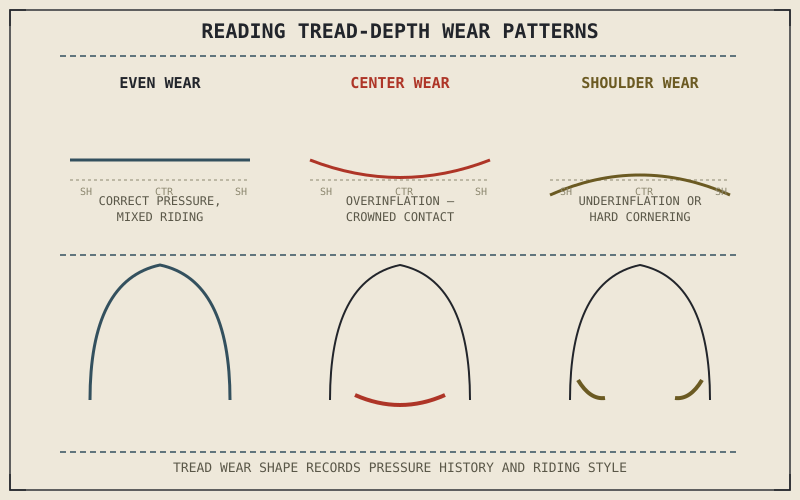

A worn tyre is a record, not just a symptom — the shape of the wear across its tread quietly documents pressure history, riding style, and alignment, all written into the rubber whether anyone intended to leave that record or not. Learning to read it turns a routine tyre check into genuine diagnostic information about the whole motorcycle, not just the tyre itself.
Chapter 6.6 closed by promising an explanation of what different wear patterns actually reveal. This chapter is that explanation, applying nearly everything the rest of this part has established about construction, contact patch, grip, and pressure to the evidence a worn tyre actually leaves behind.
Center Wear: A Pressure Story
A tyre worn noticeably faster down its center than at its shoulders is showing the direct consequence of chronic overinflation, described in Chapter 6.5: too much pressure crowns the contact patch, concentrating contact and wear into a narrow strip down the middle rather than spreading it across the full tread width. This pattern also shows up on motorcycles ridden mostly upright on the highway, where the contact patch simply spends most of its life on the center tread regardless of pressure — which is exactly why Chapter 6.6 explained sportbike tyres deliberately using a harder, more durable compound there. Distinguishing pure overinflation wear from ordinary upright-mileage wear usually comes down to checking whether the pressure has actually been kept correct throughout the tyre's life.
Shoulder Wear: A Cornering and Underinflation Story
The opposite pattern — a tyre worn faster at the shoulders than the center — has two very different possible causes that this part has already set up the tools to distinguish. Heavy, frequent hard cornering wears the shoulders quickly simply because that's where the contact patch spends its time under lean, described in Chapter 6.3, and a rider who corners aggressively will naturally show this pattern even on a correctly inflated tyre. But chronic underinflation produces a similar-looking result for a different reason: Chapter 6.5 explained how underinflation enlarges the contact patch and increases sidewall flex, which concentrates extra wear near the shoulders even on a bike ridden fairly gently. Checking pressure history alongside actual riding style is the only reliable way to tell these two causes apart.
A worn tyre isn't a single symptom with one cause — the same shoulder wear pattern can mean either aggressive cornering or chronic underinflation, and only checking pressure history alongside riding style actually tells them apart.

A tyre cross-section shown with three wear patterns labeled — even wear, center wear from overinflation, and shoulder wear from underinflation or hard cornering — with the tread depth profile drawn for each.
Uneven or One-Sided Wear: An Alignment Story
Wear that's noticeably heavier on one side of the tyre than the other, or that appears as a distinct scalloped or cupped pattern around the tyre's circumference, usually points away from pressure entirely and toward wheel alignment or a chassis issue instead — the rear wheel sitting slightly out of line with the front, or a wheel bearing or suspension component allowing motion it shouldn't. This is a case where reading tyre wear correctly prevents a rider from fixing the wrong thing: replacing a tyre worn this way without addressing the underlying alignment or component issue just produces a second tyre worn the same way, at the same cost, for the same unaddressed reason.
A Common Misconception, Cleared Up Early
It's tempting to treat any uneven wear pattern as simply "a bad tyre" and move straight to replacement without asking why the pattern happened. Nearly every wear pattern this chapter has described has an identifiable cause rooted in pressure, riding style, or alignment — treating the tyre as the whole story, rather than as evidence about a system this book has spent this entire part explaining, means the underlying cause goes uncorrected and the replacement tyre wears exactly the same way.
Where This Leads
Tyres are only half of what actually connects a motorcycle to the road — the wheel they're mounted on carries its own load, its own strength requirements, and its own design trade-offs. Chapter 6.8 closes this part by placing tyres, and the wheel beneath them, back into the whole motorcycle system.
Key Concepts to Remember
- Center wear typically points to overinflation, since excess pressure crowns and concentrates the contact patch into a narrow strip down the tread's middle.
- Shoulder wear can result from either frequent hard cornering or chronic underinflation, and distinguishing the two requires checking pressure history alongside riding style.
- One-sided or scalloped wear usually points to alignment or a chassis component issue rather than a pressure problem, and needs correcting before a replacement tyre is fitted.
- Nearly every wear pattern has an identifiable cause; replacing a tyre without addressing that cause just produces a second tyre worn the same way.
Cross-References
| ← Ch. 6.5 | Explained how underinflation and overinflation each change contact patch size and shape; this chapter reads those same effects back out of a worn tyre. |
| ← Ch. 6.3 | Established that the contact patch migrates toward the shoulder under lean; this chapter uses that fact to help explain shoulder-wear patterns. |
| → Ch. 6.8 | Closes Part VI by placing tyres and wheels back into the whole motorcycle system. |